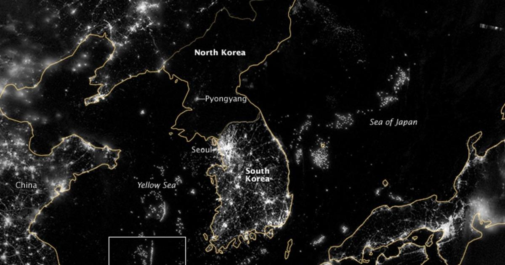
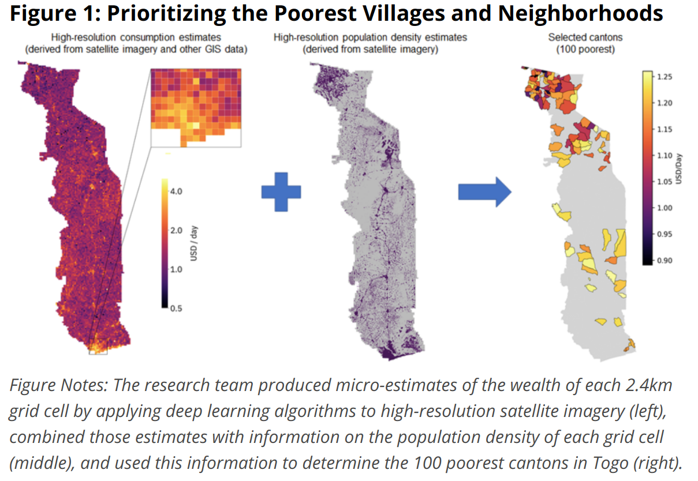
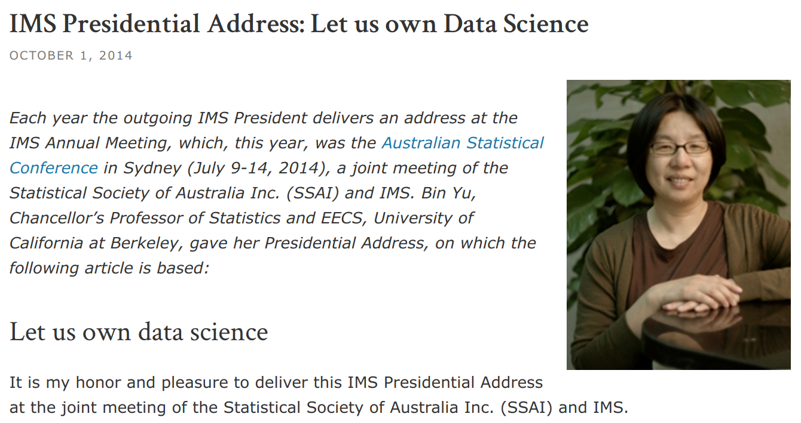
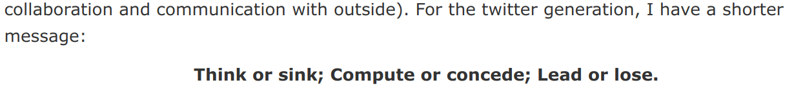
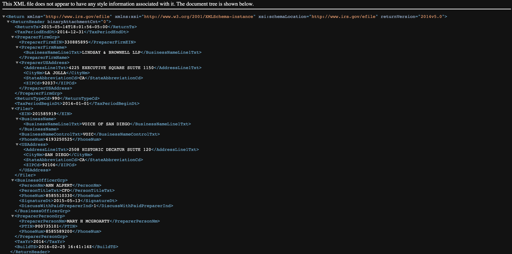
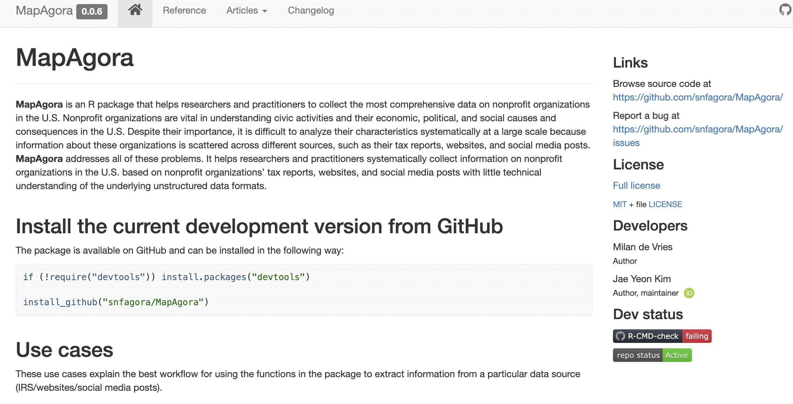
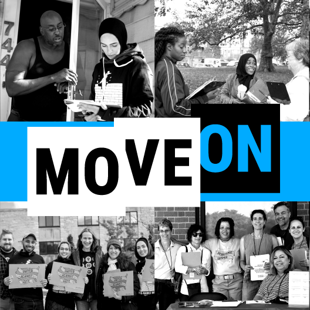
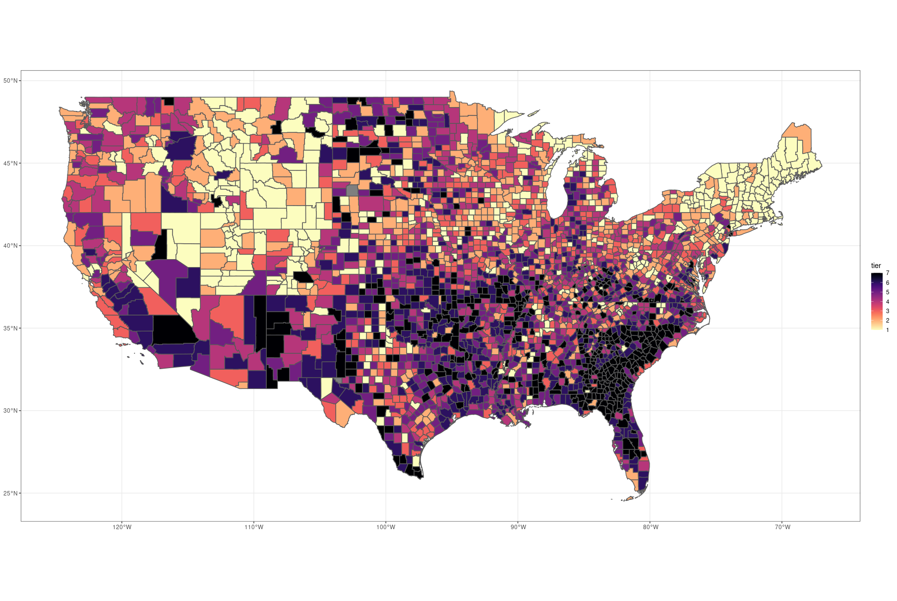
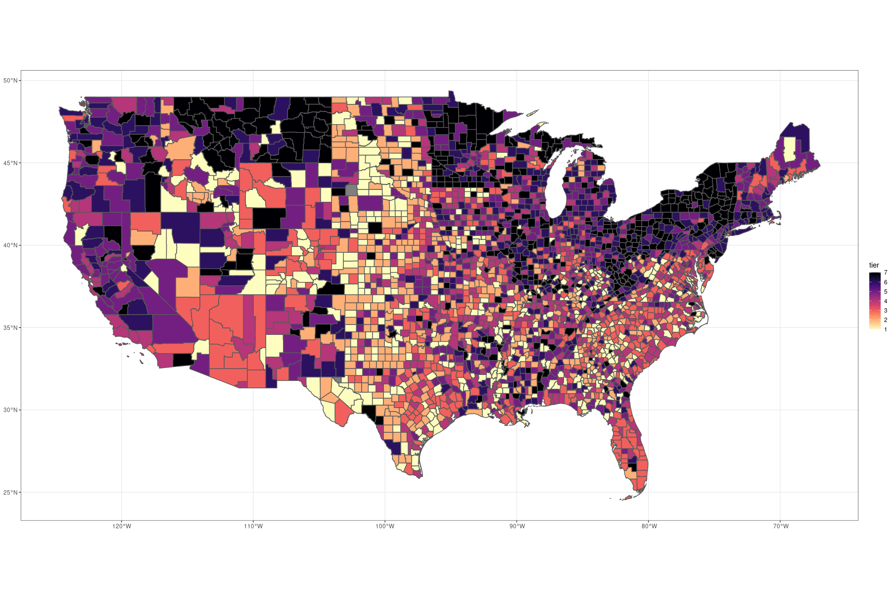
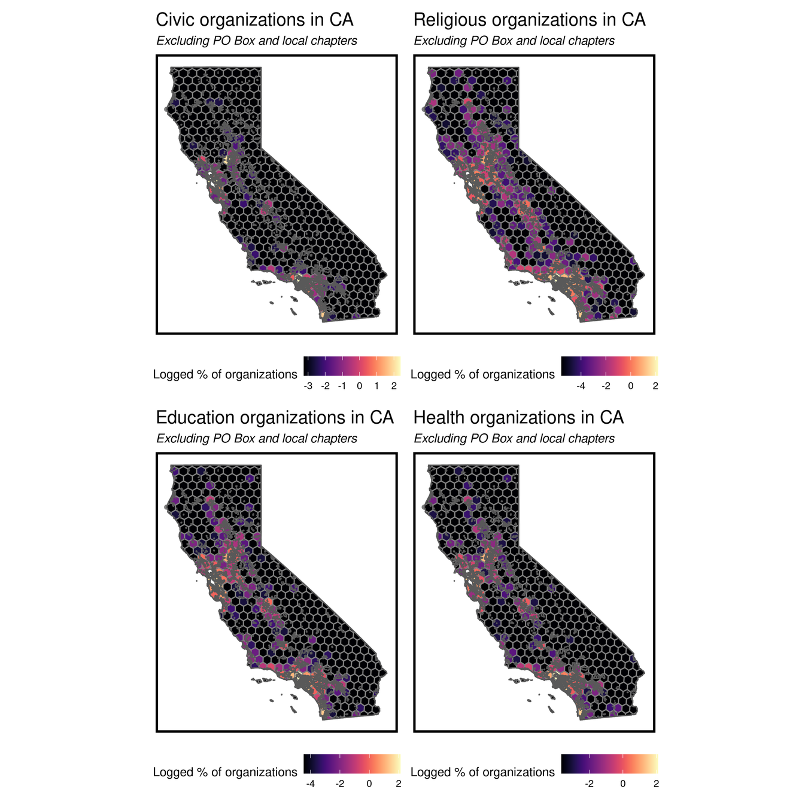

Intro to computational social science
Jae Yeon Kim

What Is Computational Social Science?
Think outside spreadsheets

Does it look like data?
Found (repurposed) data
Designed data

Big and Complex Data &
Machine Learning
Small and Tabular Data &
Causal Inference
Computational Social Science
Social sciences + Stat
Computer science
(data engineering, AI, ML)
- How do you collect data?
- How do you update data?
- How do you analye data?
- How do you collect data at scale?
- How do you update data at scale?
- How do you analyze data at scale?
Bottom line: if you can't work smart (=working with intelligent machines), it's difficult to be efficient, scale-up, and reproducible.


Civil society = "Schools for Democracy" -
Alexis de Tocqueville (1835-1859)


1,400,000 tax reports + 600,000 websites + social media feeds



Religious organizations
Unions

Exciting time to be in computational social science